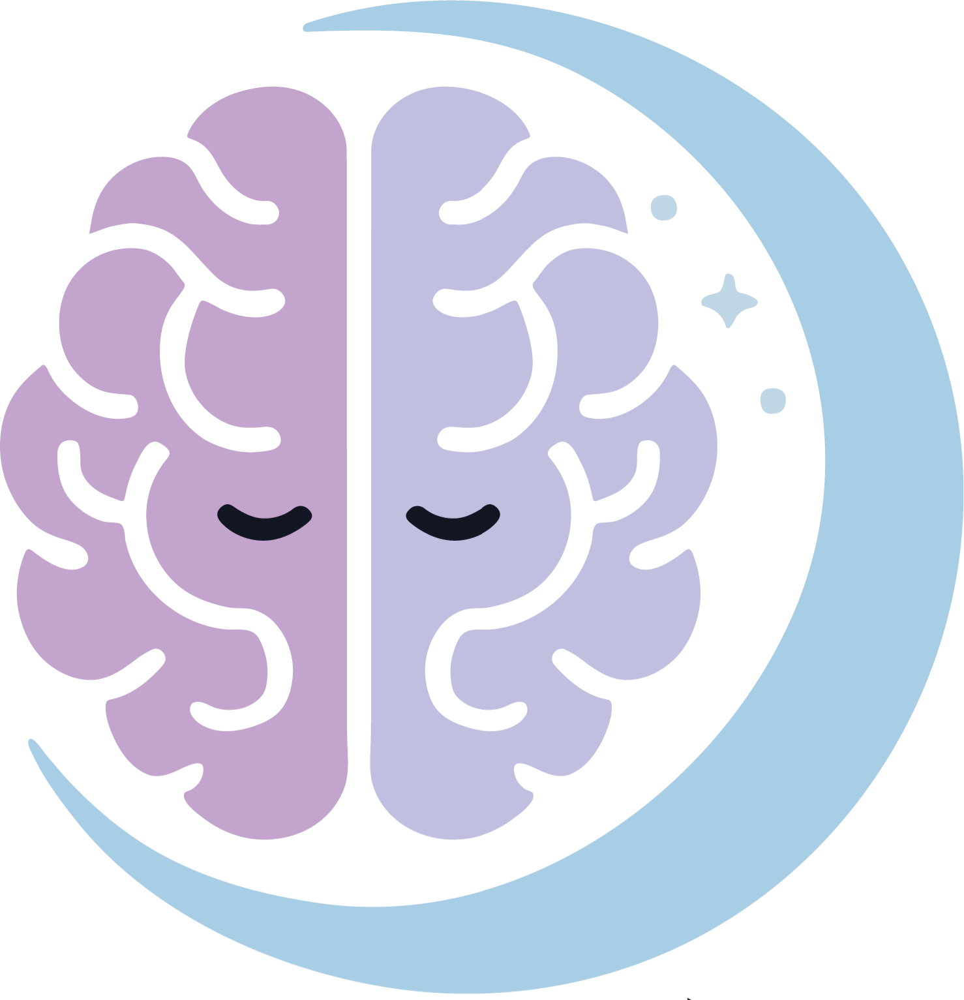

Rasool Hamidi
Rasool Hamidi is a psychologist and independent researcher whose work focuses on insomnia, cognitive and emotional processes, cancer survivorship, psychological resilience, and digital mental health interventions. His research interests particularly center on Cognitive Behavioral Therapy for Insomnia (CBT-I), rumination, emotional regulation, and the development of scalable technology-based psychological solutions capable of bridging the gap between clinical science and real-world accessibility. He is currently the Co-Founder of Omid , a digital mental health platform dedicated to delivering evidence-based CBT-I interventions and modern sleep-health solutions through accessible, user-centered technologies. Through Omid, he collaborates on designing digital therapeutic experiences aimed at improving sleep quality, emotional well-being, and long-term behavioral change. His broader academic mission is to integrate psychological science, digital innovation, and artificial intelligence into clinically meaningful systems that can expand access to mental health care at scale.
About
Rasool Hamidi is a psychologist and independent researcher whose work focuses on insomnia, cognitive and emotional processes, cancer survivorship, psychological resilience, and digital mental health interventions. He is currently the Co-Founder of Omid , a digital mental health platform focused on evidence-based CBT-I interventions and sleep-health solutions.

Co-Founder at OmidEducation
Master's Degree — General Psychology
Ahrar Institute of Technology 2018 — 2020Thesis on psychological hardiness, decision-making styles, and risky decision-making.